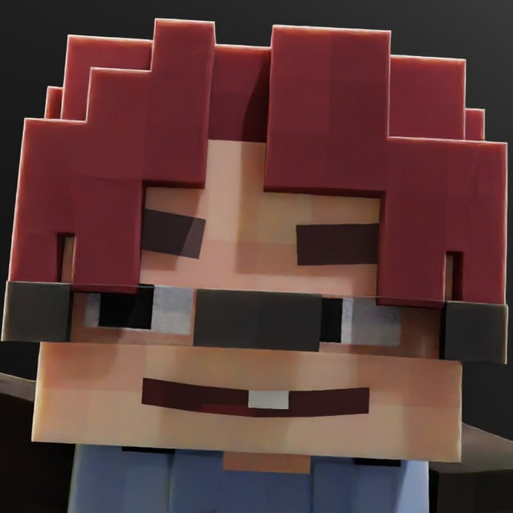

r1lame
Блогер · Интервью · Ру МапДев
ХАААААЙ! Я интервью беру у майнкрафтеров, вот так вот. Так получилось, что я брал интервью у некоторых мапмейкеров, тем самым получается их продвинул и оказался тут. Единственное — подписывайтесь на мой телеграмм канал, давайте сделаем там 500 подписчиков, чуть чуть осталось. И ИНТЕРВЬЮ СМОТРИТЕ!
← Назад к блогерам
 МапДев Вики
МапДев Вики